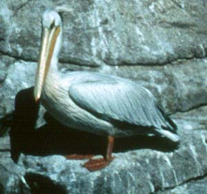
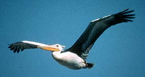

| These photographs accompany records that have been recently submitted to the committee. This record
was NOT ACCEPTED on grounds of its questionable natural occurrence. Identification was ACCEPTED.  |
|  Pink-backed Pelican Pelicanus rufescens 23 Oct 2000, Southeast Farallon Is., SF 2001-019 © 2000 Ivan Samuels (PRBO) Back to CBRC Rare Bird Photos |